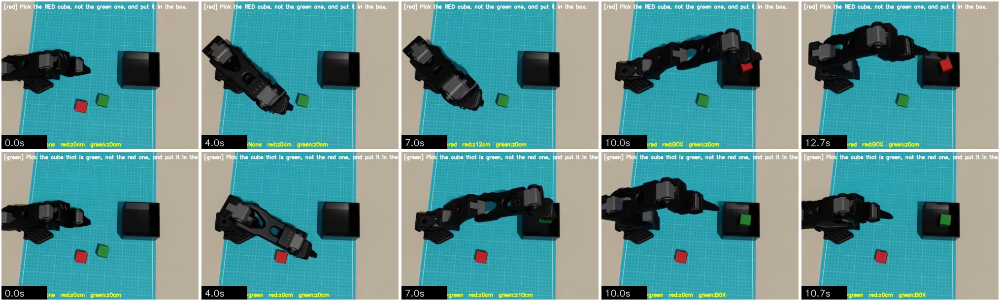
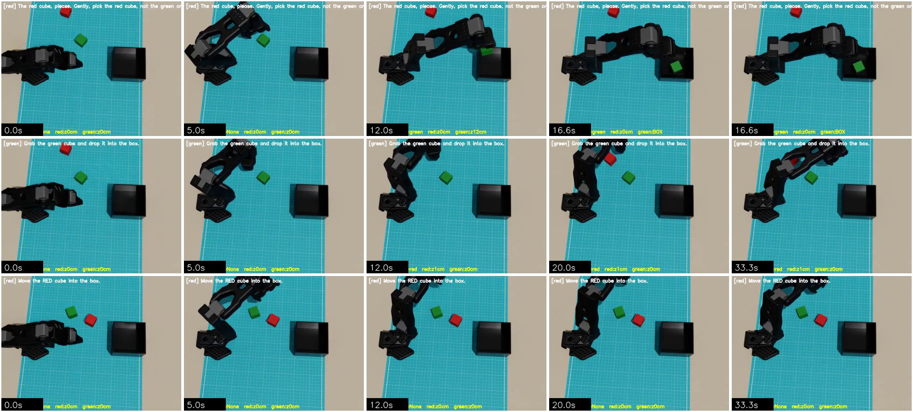

시뮬레이션 두 색 큐브 실험: 학습량을 늘리면 색을 따를까
색깔 블록 실험에서 SmolVLA는 지시문의 색을 쓰지 않았습니다. 실제 팔로는 데이터와 시행 수를 늘리기 어려워서, 같은 질문을 Isaac Sim으로 옮겨 시연 400편을 자동으로 만들었습니다. 첫 학습은 실패했고, 그 원인을 학습량에서 찾아 다시 학습한 결과까지 정리한 노트입니다.
요약
- Isaac Sim에서 빨강·초록 큐브 두 개를 놓고, IK 스크립트로 같은 배치에서 색만 바꾼 시연 짝을 만들었습니다. 학습에는 394편(196,072프레임, 배치 197개, 지시문 318종)을 썼습니다.
- 첫 학습(2만 스텝)은 프레임 하나를 평균 0.82번만 본 셈이었고, 학습한 배치에서도 큐브를 들어 올리지 못했습니다. 선행 연구의 미세조정은 대개 5~30 에폭 이상입니다.
- 12만 스텝(4.9 에폭)으로 다시 학습하자, 학습한 배치에서는 10편 중 4편을 성공했고 같은 화면에서 지시만 바꾼 짝 5쌍 중 3쌍이 두 지시 모두 맞는 큐브로 갔습니다.
- 반면 처음 보는 배치에서는 40편 중 1~2편만 성공했습니다. 4만·8만·12만 체크포인트 사이에 차이가 없었고, 처음 다가간 큐브의 색은 우연 수준이었습니다.
- 학습량은 학습 배치의 성능만 올렸습니다. 지금 가장 유력한 해석은 배치 197개를 외웠다는 것이지만, 학습 배치 평가가 10편뿐이라 아직 가설입니다.
목차
왜 시뮬레이션인가
실제 팔 실험에서는 75편을 모으는 데 하루가 걸렸고, 평가도 7회가 한계였습니다. 그 정도 표본으로는 "모델이 지시문을 안 쓴다"와 "학습이 덜 됐다"를 가르기 어렵습니다. 시뮬레이션에서는 시연과 평가를 수백 편 단위로 자동화할 수 있고, 큐브 위치와 지시문을 정확히 통제할 수 있습니다. 색은 두 가지로 줄였습니다. 우연 수준이 50%라 결과를 읽기 쉽고, 색 판단 외의 변수를 줄이려는 목적입니다.
실험 환경
| 시뮬레이터 | Isaac Sim, SO-101 모델. 실제 팔의 휴식 자세·상자 위치·카메라 배치를 실측값에 맞춤 |
|---|---|
| 카메라 | TOP(위에서 내려다봄) + 손목, 640×480 · 30 fps |
| 물체 | 빨강·초록 큐브 두 개와 검은 상자 |
| 과제 | 지시한 색의 큐브를 집어 상자에 넣기. 다른 큐브는 건드리지 않아야 함 |
| 정책 | SmolVLA(lerobot/smolvla_base에서 시작), 50스텝 청크 |
| 학습 범위 | 액션 전문가만 학습(약 1억 파라미터). 비전·언어 모델은 고정, 이미지 임베딩의 √d 배율은 공식 기본값 그대로 유지 |
| 연산 | RTX 4060 Ti (8 GB) 한 장 |
시연 생성
사람이 조종하는 대신 IK 경유점과 최소 저크 보간으로 궤적을 만들었습니다. 순서는 휴식 대기 → 목표 위로 이동하며 그리퍼 열기 → 직선 하강 → 닫기 → 들기 → 상자 위 → 놓기 → 휴식 복귀입니다. 속도와 경유 높이는 실제 팔 시연의 통계에 맞췄습니다.
| 설계 요소 | 내용 | 의도 |
|---|---|---|
| 짝 구조 | 한 배치에서 빨강 목표 1편, 초록 목표 1편 | 출발 직전 화면은 같고 지시문만 다른 반사실 짝 |
| 다양화 | 큐브 위치·방향, 경유 높이, 속도, 대기 시간, 그리퍼 개방량, 시작 자세 노이즈 | 한 궤적을 외우지 못하게 |
| 지시문 | 목적어 6종 × 동사 문장 6종 + 강조구 + 속도 부사. 10%는 "빨강, 초록 말고"처럼 다른 색이 문장에 나옴. 모든 틀은 두 색에 같은 확률로 쓰임 | 색 단어만이 목표를 가르도록 |
| 속도 부사 | slowly·quickly 류 부사는 실제 시연 속도와 연결 | 부사도 의미 있는 신호가 되게 |
| HOLDOUT 틀 | "Could you move the … over to the box?" 등 3가지 문장 틀은 학습에서 빼고 평가에만 사용 | 새 문장 일반화 확인 |
| 항목 | 결과 |
|---|---|
| 생성 | 402편 · 200,407프레임 |
| 점검 | 영상 프레임 수와 기록 길이를 편마다 대조. 4편에서 인코더 큐가 넘쳐 영상 프레임이 1장 빠진 것을 발견(타임스탬프는 연속이라 겉보기엔 정상) |
| 학습 사용 | 문제 4편의 짝까지 8편을 빼고 394편 · 196,072프레임 · 배치 197개 · 지시문 318종 |
첫 학습: 2만 스텝
2만 스텝 × 배치 8로 학습했습니다(loss 0.053). 실제 팔 실험과 같은 스텝 수였지만, 데이터가 4배 늘어 학습량은 1/4이 됐습니다. 시뮬레이터에서 바로 돌려 보니 처음 보는 배치 5편, 학습한 배치 2편이 모두 실패했습니다. 빨강 지시에는 빨강 쪽으로 내려갔지만 큐브를 0.1 cm만 들었고, 초록 지시에는 큐브에 다가가지도 않았습니다.
학습 데이터 프레임에서 첫 행동을 비교하면 오차가 작았습니다. 큰 동작은 배웠지만, 닫힌 루프에서 필요한 잡기는 배우지 못한 상태로 읽었습니다.
프레임 하나를 몇 번 보나
LeRobot 0.6의 학습은 모든 에피소드의 프레임을 한 풀에 넣고, 에폭마다 무작위로 섞어 배치를 뽑습니다(EpisodeAwareSampler). 샘플 하나는 프레임 t의 화면·관절·지시문과, 정답 행동 t~t+49입니다. 그래서 "몇 스텝"보다 "프레임 하나를 평균 몇 번 봤나(에폭)"가 학습량을 비교하는 기준이 됩니다. 선행 연구의 설정을 데이터셋 메타 파일의 프레임 수로 환산했습니다.
| 설정 | 원문 수치 | 프레임 수 | 에폭 |
|---|---|---|---|
| SmolVLA 사전학습 | 20만 스텝 × 배치 256 | 1,060만 | 4.8 |
| SmolVLA 미세조정 LIBERO | 10만 × 64 | 273,465 | 23.4 |
| SmolVLA 미세조정 Meta-World | 10만 × 64 | 204,806 | 31.2 |
| SmolVLA 실기 SO100 집기 | 20만 스텝, 배치 미기재 | 19,631 | 배치 8이면 82 |
| LeRobot 문서 예시 | 2만 × 64 | 19,631 | 65 |
| 우리 실제 팔 (색깔 블록) | 2만 × 8 | 45,963 | 3.5 |
| 이번 첫 학습 | 2만 × 8 | 196,072 | 0.82 |
무작위 추출 때문에 생기는 문제도 따로 셌습니다. 팔이 출발하기 전, 즉 화면만으로는 목표를 알 수 없어 지시문을 읽어야 하는 프레임은 7.5%(편당 약 1.2초)입니다. 잡는 순간 앞뒤 1초는 12.1%입니다. 나머지는 출발→잡기 직전 52.1%, 잡은 뒤 40.4%로, 팔 자세가 이미 목표를 드러내는 구간입니다.
ACT의 "에폭"은 에피소드당 무작위 프레임 1개를 뽑는 방식이라 프레임 기준으로 환산하면 2000 에폭이 약 5 에폭입니다. ACT 저장소는 "loss가 평탄해진 뒤 3~4배 더 학습하라"고 권합니다.
다시 학습: 12만 스텝
다른 설정은 그대로 두고 처음부터 12만 스텝(4.9 에폭, 8시간 40분)을 학습했습니다. 2만 스텝마다 체크포인트를 저장했습니다.
| 스텝 | 1천 | 2만 | 4만 | 6만 | 8만 | 10만 | 12만 |
|---|---|---|---|---|---|---|---|
| loss | 0.216 | 0.073 | 0.043 | 0.032 | 0.022 | 0.019 | 0.019 |
LeRobot의 코사인 학습률 스케줄은 학습 스텝이 감쇠 구간(기본 3만)보다 짧을 때만 감쇠 구간을 줄여 줍니다. 더 길게 학습할 때는 감쇠 구간을 직접 지정해야 해서, 학습 스크립트에 옵션을 추가해 12만으로 맞췄습니다. 첫 학습(2만)은 자동으로 2만에 맞춰 끝까지 감쇠됐습니다.
닫힌 루프 평가
시뮬레이터에서 정책을 직접 돌렸습니다. 한 배치에 다섯 편을 실행합니다. 빨강·초록 각각 학습 문장 틀 1편과 HOLDOUT 틀 1편, 그리고 빈 지시문 1편입니다. 편당 최대 1000스텝(약 33초)입니다.
| 판정 | 기준 |
|---|---|
| 성공 | 목표 큐브가 상자 안에 있고, 다른 큐브는 1.5 cm 미만 이동 (시연 생성 때와 같은 기준) |
| 첫 접근 | 그리퍼 끝이 처음 다가간 큐브 (수평 3 cm 이내, 높이 6 cm 미만). 잡기에 실패해도 색 선택을 볼 수 있음 |
| 지시 바꾸기 짝 | 같은 배치·같은 틀 종류에서 빨강 지시와 초록 지시가 각각 맞는 큐브로 갔는지 |
| 조건 | 성공 | 큐브를 3 cm 이상 들어 올림 | 첫 접근 정답 / 오답 / 없음 | 지시 바꾸기 짝 둘 다 정답 |
|---|---|---|---|---|
| 12만 · 학습한 배치 | 4/10 | 4/10 | 7 / 0 / 3 | 3/5 |
| 12만 · 새 배치 | 1/40 | 2/40 | 6 / 13 / 21 | 0/20 |
| 8만 · 새 배치 | 2/40 | 6/40 | 9 / 9 / 22 | 2/20 |
| 4만 · 새 배치 | 1/40 | 2/40 | 9 / 5 / 26 | 0/20 |
학습한 배치는 학습 데이터의 배치 2~6번을 같은 위치로 다시 놓고 학습 문장 틀로만 평가했습니다. 새 배치는 학습에 없는 시드 10개입니다. 빈 지시문 편에서는 세 체크포인트 모두 대부분 어느 큐브에도 다가가지 않았습니다.


확인된 것과 가설
| 구분 | 내용 | 근거와 한계 |
|---|---|---|
| 확인 | 첫 학습은 선행 연구보다 학습량이 크게 적었다 | 0.82 에폭, 표의 최저. 선행 연구는 4.8~30 에폭 이상 |
| 확인 | 학습량을 늘리면 학습한 배치에서 잡기와 색 선택이 생긴다 | 2만: 학습 배치 0/2 → 12만: 4/10, 첫 접근 7편 모두 지시 색. 단 표본 10편 |
| 확인 | 새 배치 성능은 4만~12만에서 변하지 않는다 | 성공 1~2/40, 체크포인트 간 차이가 표본 오차 수준 |
| 확인 | 새 배치에서는 지시한 색을 고르지 못한다 | 첫 접근 정답과 오답이 비슷하거나 오답이 많음(12만 6 대 13) |
| 가설 | 배치 197개를 외웠다 | 학습 배치와 새 배치의 격차와 맞지만, 학습 배치 평가가 10편뿐. 학습 배치 30~50개로 늘려 확인 필요 |
| 가설 | 새 배치에서 큐브에 다가가지 못하는 건 복구 장면이 없어서다 | 시연은 오차 없는 스크립트 궤적이라, 경로에서 조금 벗어난 상태를 한 번도 보지 못함(DART가 지적한 문제). 미검증 |
| 가설 | 지시문이 필요한 프레임이 적어 색 학습 신호가 약하다 | 출발 전 7.5%. 학습 배치에서는 색을 따르므로, 신호가 아예 없지는 않음 |
지금 가장 중요한 질문은 "학습 배치에서 색을 따르는 것이 색을 본 결과인지, 배치와 지시문 짝을 외운 결과인지"입니다. 학습 배치 평가를 늘리고, 배치를 다양화한 데이터로 같은 학습을 반복하면 둘을 가를 수 있습니다.
관련 연구
평가 전에 학습량·추출 방식·지시문 무시에 관한 연구를 정리했습니다. 2026년 논문 다수는 프리프린트이고, 일부 수치는 초록 수준에서 확인한 것입니다.
| 주제 | 연구 | 내용 |
|---|---|---|
| 결정 프레임 희소 | Keyframe-Focused IL [1], Copycat [2], DataMIL [3], SCRIM [4] | 행동이 바뀌는 프레임은 극소수인데 가장 중요. 그 프레임이나 잡기 직전 상태에 가중치를 주면 개선 |
| 완벽한 시연의 한계 | DART [5], STAIR [6] | 오차 없는 시연만으로는 닫힌 루프에서 오차가 쌓임. 시연 중 노이즈를 넣어 복구 장면을 담는 것이 효과적이고, STAIR는 프레임 재가중보다 복구 장면 추가의 이득이 크다고 보고 |
| 지시문 무시 | LIBERO-Plus [7], LIBERO-PRO [8], LangGap [9], RoboFollow [10] | 한 화면에 과제 하나인 데이터에서 VLA는 화면만으로 과제를 맞힘. 같은 화면에 여러 지시가 있는 데이터가 필요하지만, 그것만으로 격차가 다 메워지지는 않음 |
| 지름길·인과 혼동 | Causal Confusion [11], State-free Policy [12] | 원인이 아닌 상관 신호(관절 상태 등)에 기대 분포가 바뀌면 실패 |
| 반사실·대비 학습 | CAST [13], CofactVLA [14] | 같은 관측·다른 지시·다른 행동을 학습에 넣어 지시 따르기 강화. 우리 짝 구조와 같은 방향 |
| 다양성 | Data Scaling Laws in IL [15] | 일반화는 환경·물체 수에 대해 거듭제곱 법칙. 환경당 시연 수는 일정 수준 이후 효과가 작음 → 양보다 다양성 |
마지막 연구가 이번 결과와 가장 직접 연결됩니다. 우리 데이터는 배치당 시연이 두 편이고 배치는 197개입니다. 같은 400편이라도 배치 수를 늘리는 쪽이 새 배치 일반화에 유리할 수 있습니다.
다음 실험
한 번에 하나씩 바꾸고, 판정은 모두 같은 평가기(새 배치 10개 + 학습 배치)로 합니다.
- 외웠는지 확인. 학습 배치 30~50개로 평가를 늘립니다. 학습 배치 성공률이 높게 유지되면 "배치 암기" 해석이 강해집니다.
- 배치 다양화. 시연 수는 비슷하게 두고 서로 다른 배치를 수백 개 더 만듭니다. 새 배치 성공률이 오르는지 봅니다.
- DART식 노이즈 시연. 실행하는 행동에는 노이즈를 섞고 라벨은 IK가 교정한 행동으로 기록해, 경로에서 벗어났다가 돌아오는 장면을 담습니다. 새 배치의 "접근 없음"을 겨냥합니다.
- 결정 구간 가중 추출과 짝 배치. 출발 전·잡기 앞뒤 프레임을 더 자주 뽑고, 같은 배치의 빨강·초록 짝을 한 배치에 함께 넣습니다. 잡기는 되는데 색이 틀릴 때의 처방입니다.
이 실험이 전체 계획에서 어디에 해당하는지는 실험 로드맵에 정리했습니다.
참고문헌
- C. Wen et al. Keyframe-Focused Visual Imitation Learning. ICML 2021. arXiv
- C. Wen et al. Fighting Copycat Agents in Behavioral Cloning from Observation Histories. NeurIPS 2020. arXiv
- DataMIL: Selecting Data for Robot Imitation Learning with Datamodels. arXiv:2505.09603. arXiv
- Where Small Mistakes Matter (SCRIM). arXiv:2610.17709. arXiv
- M. Laskey et al. DART: Noise Injection for Robust Imitation Learning. CoRL 2017. arXiv
- Perfect Demo Makes Poor Teacher (STAIR). arXiv:2606.15587. arXiv
- LIBERO-Plus: In-depth Robustness Analysis of Vision-Language-Action Models. arXiv:2510.13626. arXiv
- X. Zhou et al. LIBERO-PRO. arXiv:2510.03827. arXiv
- Y. Hou, L. Zhao. LangGap. arXiv:2603.00592. arXiv
- RoboFollow. arXiv:2609.25636. arXiv
- P. de Haan, D. Jayaraman, S. Levine. Causal Confusion in Imitation Learning. NeurIPS 2019. arXiv
- Do You Need Proprioceptive States in Visuomotor Policies? arXiv:2509.18644. arXiv
- C. Glossop et al. CAST: Counterfactual Labels Improve Instruction Following in VLAs. arXiv:2508.13446. arXiv
- CofactVLA. arXiv:2608.04396. arXiv
- F. Lin et al. Data Scaling Laws in Imitation Learning for Robotic Manipulation. ICLR 2025. arXiv
- M. Shukor et al. SmolVLA. arXiv:2506.01844. arXiv
- T. Zhao et al. Learning Fine-Grained Bimanual Manipulation with Low-Cost Hardware (ACT). RSS 2023. arXiv